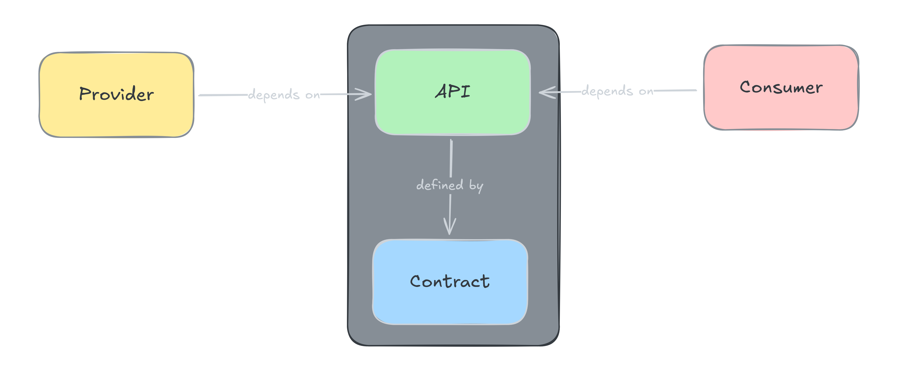
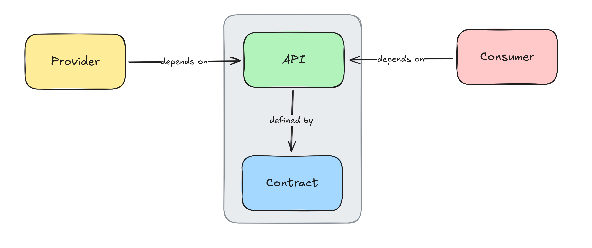

Contract-first API Testing with Quarkus
Jaap Coomans
 @jaapcoomans.nl
@jaapcoomans.nl

Image generated with DALL-E
about:me
🏷️ Jaap Coomans
🏠 Tilburg (The Netherlands)
📅 Java since 2002
🧑💻 Software Architect at group9
🚩 Founder of BrabantJUG
👨👩👧👧 Husband, Father of 2 girls
🎲 Boardgame player
🍺 Craft beer sampler
 @jaapcoomans.nl
@jaapcoomans.nl

Author: Chris Marquardt
https://www.flickr.com/photos/nubui/9550939064
https://www.flickr.com/photos/nubui/9550939064
Test Pyramid - Mike Cohn


Test Pyramid - The essence


Author: Gerd Altmann
https://pixabay.com/photos/contract-consultation-pen-4313684/
https://pixabay.com/photos/contract-consultation-pen-4313684/
API Terminology


De-facto API (no contract)




Our goals
- Contract-first
- OpenAPI
- Existing tooling
- No dependency on live system
Do we need a registry?
Author: Carolina Prysyazhnyuk
https://www.flickr.com/photos/129657698@N02/16159019626/
https://www.flickr.com/photos/129657698@N02/16159019626/
Our registry
+
Happy side effects
- Decentral
- API Lifecycle
- Dependency management
Java-based Testing


Java-based Testing


REST-based Testing


@QuarkusTest vs @SpringBootTest
| @QuarkusTest | @SpringBootTest |
|---|---|
| One | Two |
Onion Architecture

Just a slide
- one
- two